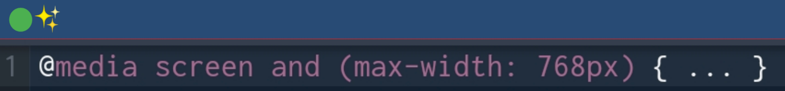

CSS; Cascading Style Sheets...
Here's a step-by-step tutorial breakdown on CSS for a beginner:
Step 1: Introduction to CSS
- CSS stands for Cascading Style Sheets
- CSS is used to control the layout and appearance of web pages
- CSS is used to separate presentation from structure (HTML)
Step 2: Basic CSS Syntax
- CSS syntax consists of a selector, a property, and a value
- Example:
h1 { color: blue; }
- Selectors can be HTML elements, classes, IDs, or combinations of these
Step 3: CSS Selectors
- HTML element selectors: h1, p, img, etc.
- Class selectors: .header, .footer, .nav, etc.
- ID selectors: #header, #footer, #nav, etc.
- Combinators: h1.header, .nav ul, etc.
Step 4: CSS Properties and Values
- Properties: color, background-color, font-size, etc.
- Values: blue, #ffffff, 16px, etc.
- Units: px, %, em, rem, etc.
Step 5: CSS Colors
- Color names: red, blue, green, etc.
- Hexadecimal colors: #ff0000, #00ff00, #0000ff, etc.
- RGB colors: rgb(255, 0, 0), rgb(0, 255, 0), rgb(0, 0, 255), etc.
Step 6: CSS Text Properties
-font-family: specifies the font family
-font-size: specifies the font size
-font-style: specifies the font style (normal, italic, oblique)
-font-weight: specifies the font weight (normal, bold, bolder, lighter)
-text-align: specifies the text alignment (left, right, center, justify)
-text-decoration: specifies the text decoration (none, underline, overline, line-through)
-text-transform: specifies the text transformation (none, uppercase, lowercase, capitalize)
Step 7: CSS Box Model
- The box model consists of four parts: content, padding, border, and margin
-width and height properties specify the width and height of the content area
-padding property specifies the padding between the content area and the border
-border property specifies the border around the padding
- margin property specifies the margin between the border and other elements
Step 8: CSS Layout
-display property specifies the display type (block, inline, inline-block, etc.)
-position property specifies the position type (static, relative, absolute, fixed, etc.)
-float property specifies the float type (left, right, none)
-clear property specifies the clear type (left, right, both, none)
Step 9: CSS Media Queries
- Media queries allow you to apply different styles based on different media types (screen, print, etc.) or conditions (width, height, etc.)
- Example:

Step 10: CSS Preprocessors and Frameworks
- CSS preprocessors like Sass and Less allow you to write more efficient and modular CSS code
- CSS frameworks like Bootstrap and Tailwind CSS provide pre-designed CSS components and layouts to speed up development
That's a basic overview of CSS! Of course,
there's more to learn, but this should give you a good starting point.